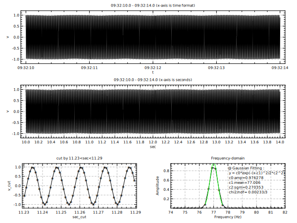

opt (gd:1 ts:0.9)
@ n = 4000
@ ts1 = "09:32:10.0" ;# string of the start time (local time)
@ ts2 = "09:32:14.0" ;# string of the end time (local time)
@ t1 = time([ts1]) ;# convert ts1 to the unix epoch time (UTC)
@ t2 = time([ts2]) ;# convert ts2 to the unix epoch time (UTC)
@ pi2 = 3.14159265*2
@ freq = 77 ;# frequency (Hz)
set t = range([n],[t1],[t2]) ;# ranged data of the unix time from t1 to t2
set v = sin(t*[pi2]*[freq]) ;# sinusoidal waveform of freq=77Hz
set sec = time(t,sec) ;# convert the unix time to seconds (local time)
div 1 3
vp 0.07 0.96 0.1 0.9 0.2
title "[ts1] - [ts2] (x-axis is time format)"
plot t v (tf:"%H:%M:%S")
title "[ts1] - [ts2] (x-axis is seconds)"
plot sec v (xt:0.2)
div 2 3
vp reset
@ cc = "11.23<sec<11.29"
title "cut by [cc]"
plot sec v (cc:"[cc]" st:star xt:0.01 bp:5)
title "Frequency-domain"
xlab "Frequency (Hz)"; ylab "Amplitude"
fplot sec v (fw:bh xr:74,82 xt:1 st:star bp:6)
ffit v gaus (fr:76.2,77.8 cp:0.5,0.9 rc:1 lc:green)
